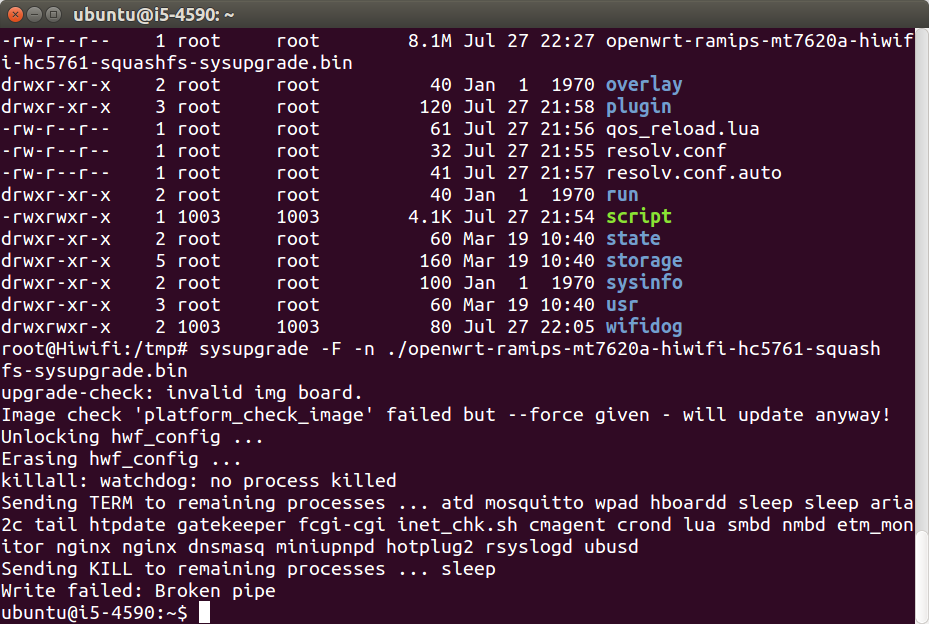
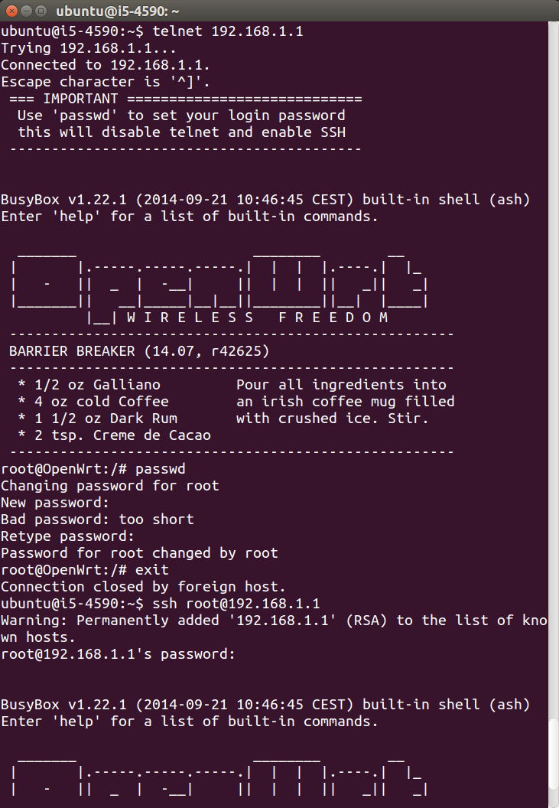
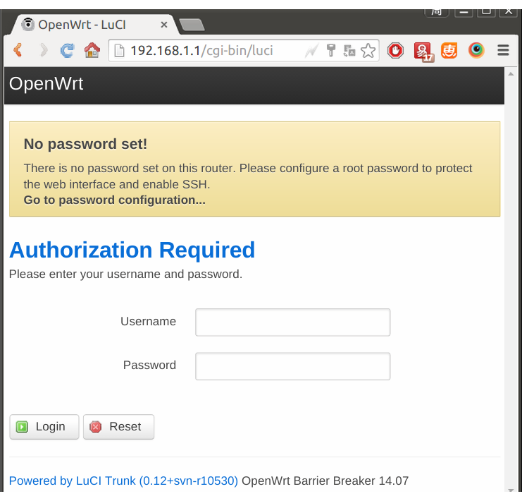
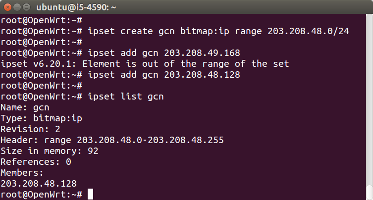

刷机
在打造智能VPN路由器的过程中，会发现极路由官方固件不支持ipset，只能做到IP智能分流，无法实现域名智能分流。所以要寻找支持ipset的固件，进行刷机。本文以极路由2为例（极1s新版HC5661A尚没有固件）。
下载OpenWrt开源固件
极路由的OpenWrt固件在这里下载：github.com 或 本站镜像，极2的型号为HC5761，所以下载openwrt-ramips-mt7620a-hiwifi-hc5761-squashfs-sysupgrade.bin即可。
路由器刷入OpenWrt
由于极路由本身已经是OpenWrt了，所以用sysupgrade直接刷机即可。
ssh root@192.168.199.1
cd /tmp
wget http://downloads.openwrt.io/barrier_breaker/14.07/ramips/mt7620a/openwrt-ramips-mt7620a-hiwifi-hc5761-squashfs-sysupgrade.bin
sysupgrade -F -n openwrt-ramips-mt7620a-hiwifi-hc5761-squashfs-sysupgrade.bin

刷机完毕，shell窗口会卡住，关闭即可。待路由器重启完毕，电脑断开网络重连，即可使用telnet和http管理路由器，会看到下面的画面，需要给root帐号设置密码，然后才可以使用ssh登录。如果刷机失败，路由器无法telnet、http或ssh，也不用担心，刷回官方原厂固件即可，请按照此文档：http://openwrt.io/docs/gee/。
如果刷机成功，登录指令如下：
telnet 192.168.1.1
passwd
exit
ssh root@192.168.1.1
 
测试ipset
刷机是否实现了支持ipset的目的？需要测试，指令如下：
ipset create gcn bitmap:ip range 203.208.48.0/24
ipset add gcn 203.208.48.128
ipset list gcn

测试dnsmasq是否支持 ipset
实际搭建智能VPN路由器时，是使用dnsmasq的ipset，指令如下：
echo "conf-dir=/etc/dnsmasq.d" >> /etc/dnsmasq.conf
mkdir -p /etc/dnsmasq.d
echo -e "server=/fonts.googleapis.com/223.5.5.5\nipset=/fonts.googleapis.com/gcn" > /etc/dnsmasq.d/blacklist
/etc/init.d/dnsmasq restart
刷回官方原厂固件
各个品牌官网都会提供官方原厂固件，按照型号下载即可。各个品牌刷原厂固件的方式也不同，按照官方文档即可。本站提供这些品牌的固件镜像和刷机文档：
| 品牌 | 官方原厂固件下载和刷机文档 |
|---|---|
| 极路由 | http://openwrt.io/docs/gee/ |
| 优酷路由宝 | http://openwrt.io/docs/youku/ |